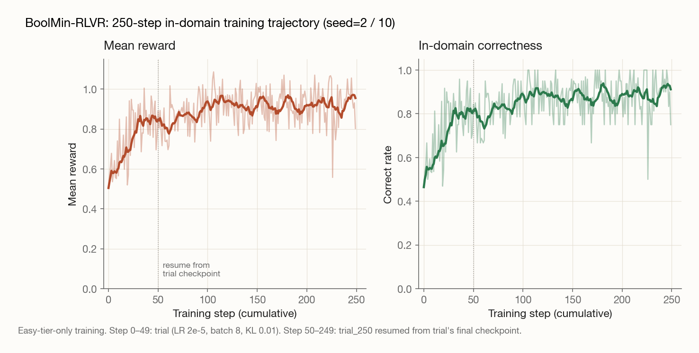

Training Qwen3-4B to minimize Boolean circuits, then checking whether the result transferred to graduate-level science reasoning.
I trained Qwen3-4B-Instruct with GRPO on Boolean circuit minimization from truth tables, using Espresso (via PyEDA) as the reference solver. GPQA Diamond climbed +3.5pp (48.0% → 51.5%): graduate-level science reasoning that has nothing to do with Boolean logic. n=1 seed, but the gain grew monotonically with training (+1.5 at step 50 → +3.5 at step 250), which is the strongest evidence I have that the effect is real rather than sampling noise; a second seed is in flight. MATH-500 was unaffected (-0.6pp, noise), IFEval showed a small alignment tax (-0.4pp). A matched-budget companion run on RNA inverse folding produced strong in-domain learning but degraded GPQA by 4.1 points. Same algorithm, same model, same training scale. The choice of task seems to matter more than the existence of a verifier.
| Benchmark | Base | BoolMin-trained | RNA-trained |
|---|---|---|---|
| GPQA Diamond | 48.0% | 51.5% (+3.5) | 43.9% (−4.1) |
| MATH-500 | 91.0% | 90.4% (−0.6) | 91.2% (+0.2) |
| IFEval (strict) | 84.5% | 84.1% (−0.4) | 83.0% (−1.5) |
| IFEval (loose) | 87.8% | 87.2% (−0.6) | 87.1% (−0.7) |
Matched-pair zero-shot evaluation. Same base model (Qwen3-4B-Instruct-2507), same algorithm (GRPO via Tinker), same hyperparameters, matched training budget (~250 / ~150 steps; ~$11–15 each). Only the training task varies. n=1 seed per condition; see the limitations section.
The recent RLVR-for-reasoning literature has a soft assumption running through it: that any task with a fast verifier produces transfer to general reasoning, because the structural properties of the training signal (correctness feedback, exploration through rollouts) are what matter. NP-Engine reported +4.1 on GPQA from training on classical NP problems (TSP, knapsack, graph coloring). If the assumption holds, training on any inverse-design task with similar structure should produce similar transfer.
I wanted to actually test that assumption, both with a positive case (does a different NP-complete inverse-design task work?) and a stress test (does an inverse-design task in an unrelated domain work?). The two experiments share an algorithm, a model, a training budget, and an evaluation suite; the only thing that varies is what the model is trained on.
This post is the positive case. The negative case, RNA inverse folding, is written up separately.
Boolean circuit minimization from a truth table (given the 2^n output bits, find a minimal sum-of-products expression) has three properties that make it a clean RLVR target:
The task is structurally close to NP-Engine's targets (combinatorial search with verifiable answers) but in a domain (Boolean algebra) that's distinct enough to make memorization implausible.
The model receives an n-input truth table as text and produces a sum-of-products expression using &, |, ~:
A B C D | Y
0 0 0 0 | 0
0 0 0 1 | 0
0 0 1 0 | 1
... (16 rows)
Output: Y = (A & ~B) | (C & D)The reward is two-tiered:
min(reference_gate_count / model_gate_count, 1.0), where gate count is the AST node count and the reference is Espresso's output via PyEDA.Default weights (correctness=1.0, quality=0.5, format=0.1) place most of the signal on correctness. A correct expression matching Espresso's gate count earns ~1.0; a correct-but-bloated expression earns proportionally less.
| Tier | Inputs | Truth table size | Notes |
|---|---|---|---|
| Easy | 3–4 | 8–16 rows | Solvable by inspection |
| Medium | 5–6 | 32–64 rows | Karnaugh maps still work |
| Hard | 7–8 | 128–256 rows | Beyond manual minimization |
| Expert | 5–6, 2–3 outputs | — | Shared-subexpression optimization |
The eval set freezes 500 instances (125 per tier). For the main training run, I trained on easy-tier-only: partly to keep the budget down, partly because the question was whether transfer could come from a single difficulty tier rather than requiring a curriculum.
Evaluated on the frozen 500-instance set:
| Tier | Base correct | Trained correct | Δ | Base parseable | Trained parseable |
|---|---|---|---|---|---|
| Easy | 67.2% | 94.4% | +27.2 | 69.6% | 99.2% |
| Medium | 12.0% | 33.6% | +21.6 | 34.4% | 78.4% |
| Hard | 0.0% | 1.6% | +1.6 | 8.0% | 32.0% |
| Expert | 8.8% | 22.4% | +13.6 | 51.2% | 64.8% |
| Overall | 22.0% | 38.0% | +16.0 | 40.8% | 68.6% |
Two things stand out. First, training on easy-tier-only produced double-digit improvements on medium and expert tiers, so the model isn't just memorizing easy-tier patterns. Second, hard tier remains effectively zero. The 2^7 = 128-row truth tables exceed what a 4B model can reason through reliably, so any transfer from hard instances would be limited; the in-domain generalization story rests on the easy → medium/expert jump.

This is the actual question. Zero-shot evaluation of the trained checkpoint against three reasoning benchmarks:
| Benchmark | Base | 50-step | 250-step | Final Δ |
|---|---|---|---|---|
| MATH-500 | 91.0% | — | 90.4% | -0.6 |
| GPQA Diamond | 48.0% | 49.5% | 51.5% | +3.5 |
| IFEval (strict) | 84.5% | 85.4% | 84.1% | -0.4 |
| IFEval (loose) | 87.8% | 88.7% | 87.2% | -0.6 |
The headline is GPQA Diamond +3.5, which is in the same ballpark as NP-Engine's +4.1 on the same benchmark from training on classical NP problems. The gain also grew with more training (+1.5 at 50 steps, +3.5 at 250), which is consistent with steady learning rather than a noisy point estimate.
MATH-500 was untouched. Two readings are plausible: (a) the 4B model is ceiling-saturated on MATH at 91%, or (b) Boolean minimization and mathematical reasoning engage genuinely different model capacities. I'd bet on (a) given the small headroom but can't distinguish them from the data.
IFEval showed a small consistent regression: a modest alignment tax. The 50-step checkpoint had a small positive shift on IFEval that disappeared by step 250, suggesting whatever IFEval-aligned behavior emerged early was either noise or got optimized away by the longer training. Not a catastrophe, but worth noting.
The interesting question this experiment was built to answer is whether RLVR transfer is task-agnostic. I ran a parallel experiment on RNA inverse folding — same algorithm, same model family, same training budget, same evaluation suite. The in-domain story for RNA was good (perfect-solve rate 30% → 52%; written up here). The cross-domain story was the opposite of BoolMin's:
| Benchmark | Base | BoolMin trained | RNA trained |
|---|---|---|---|
| GPQA Diamond | 48.0% | 51.5% (+3.5) | 43.9% (−4.1) |
| IFEval (strict) | 84.5% | 84.1% (−0.4) | 83.0% (−1.5) |
| IFEval (loose) | 87.8% | 87.2% (−0.6) | 87.1% (−0.7) |
Two RLVR runs, two tasks with fast verifiers, both produced strong in-domain learning. One transferred to graduate-level science reasoning; the other actively hurt it.
circuits/configs/trial_seed42.yaml) is currently running; the two-seed mean will replace the n=1 estimate when it lands.src/reward/reward_fn.pysrc/solver/verify.pysrc/training/grpo_train.pysrc/training/curriculum.pyresults/eval_indomain/, results/eval_250/experiment.md · Baselines summary: baselines.md